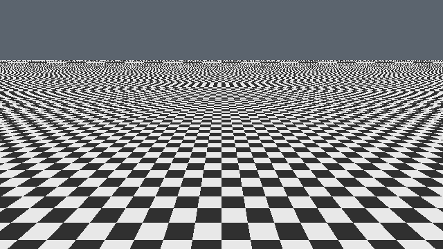
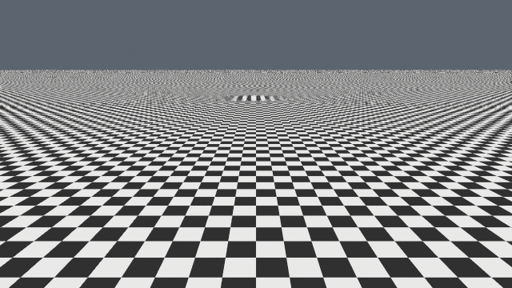
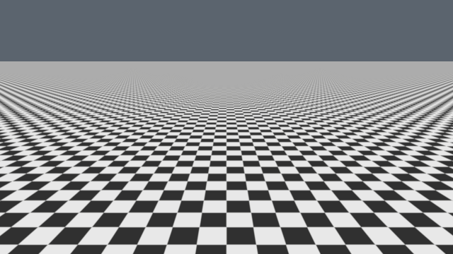

Moiré / Unreal
One scene. One camera. Three ways to render the detail.



Capture details and evidence
Each set comes from one synchronized Unreal 5.8.2 game window. All three views share the same procedural checkerboard, camera and clock, with separate temporal histories. In motion keeps the camera moving through capture; raw pixels identify the saved pose at 4.321 seconds. The displayed images are lossless crops of that window. These are still images, so they do not measure temporal quality over a trajectory or game frame rate.
TSR uses 100% input/output resolution and a 200% history. Our shader integrates a Gaussian pixel window with standard deviation 0.5 pixel; TSR has a different reconstruction filter. The scene is unlit, and exposure, tone curve, vignette, motion blur and dynamic resolution are disabled. Independent checks verify the source, color transfer and camera registration.
Synchronized evidence · Original game window · Reproduce the captures · Earlier MRQ gallery
{kind=link}